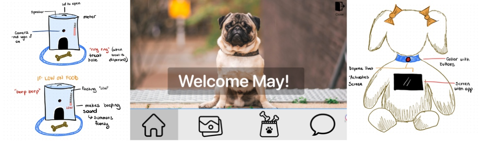
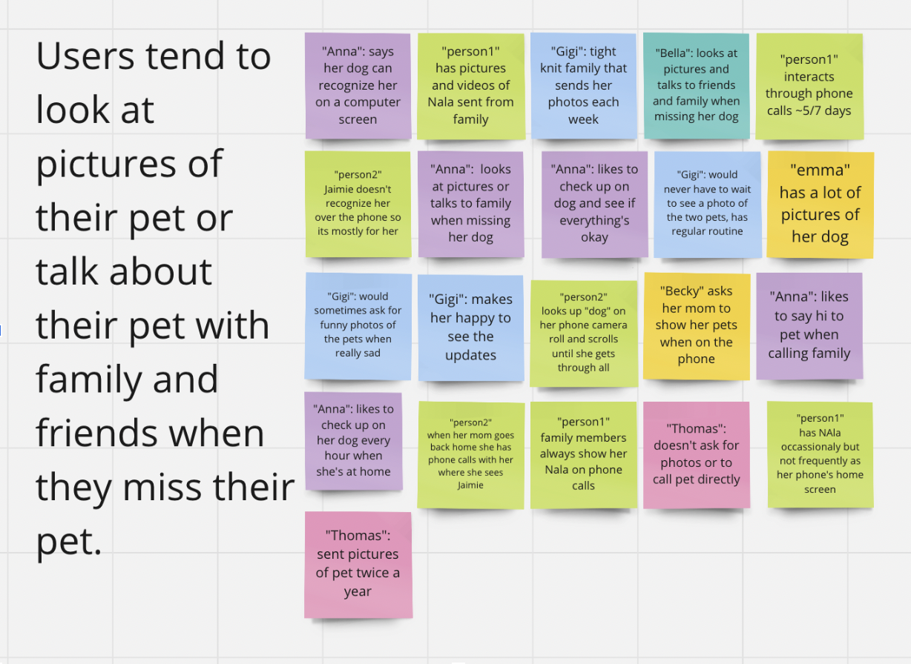
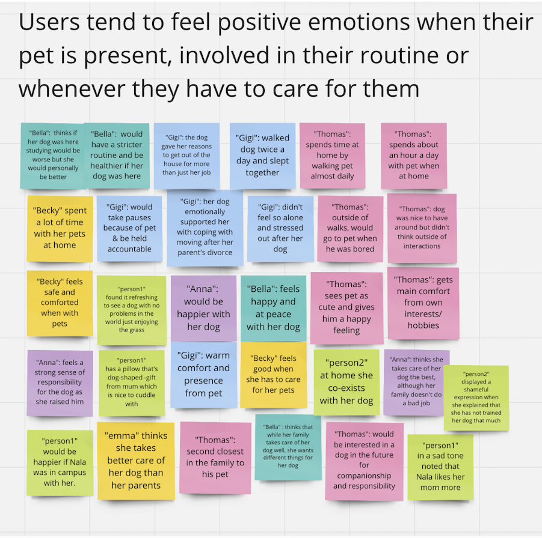
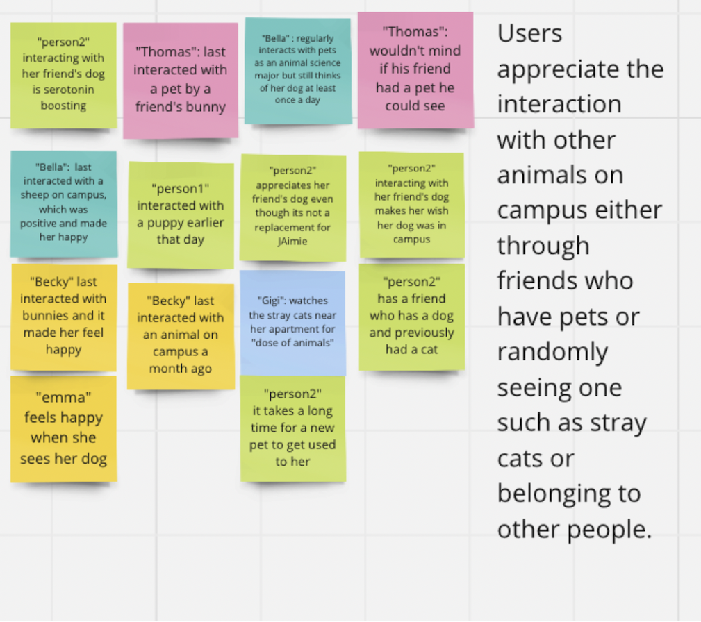
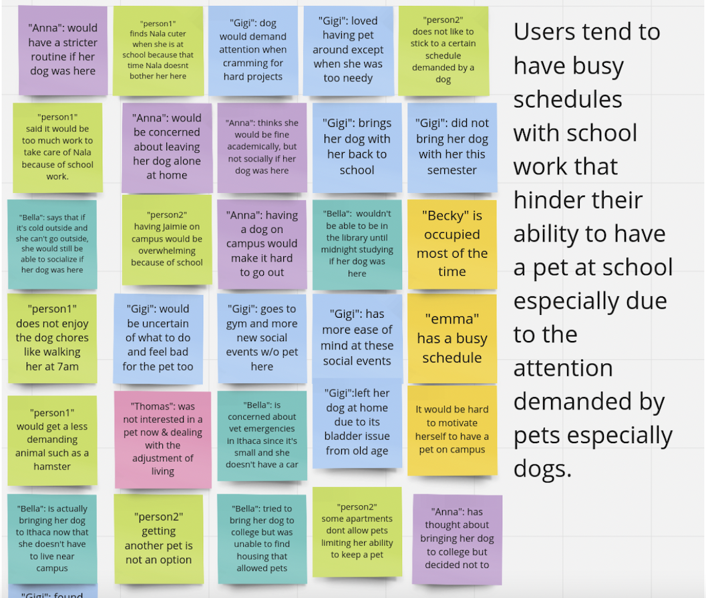
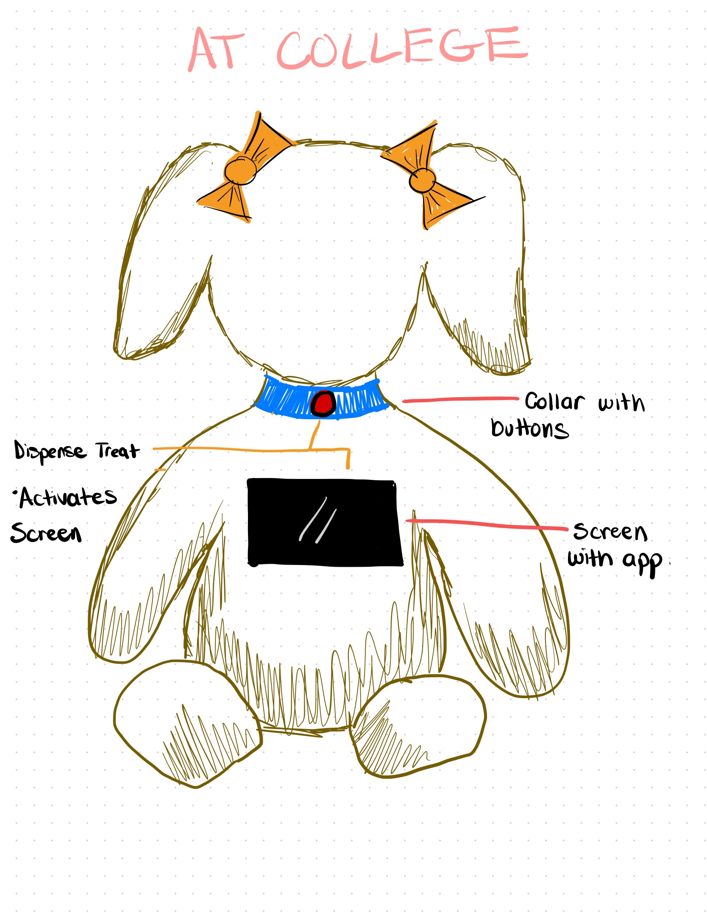
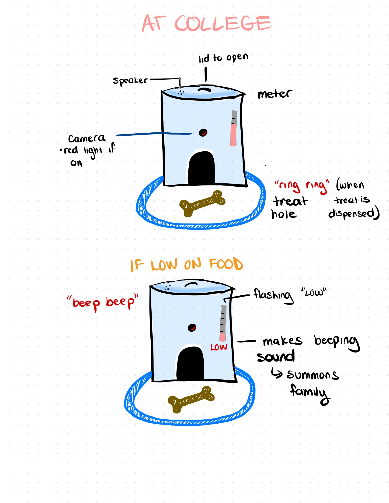
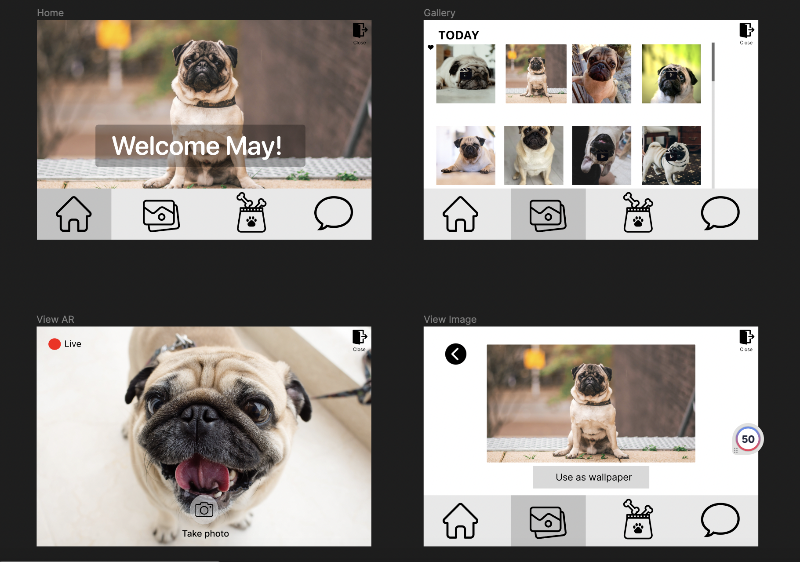

Contact information:


This website was coded and designed by me from scratch on VS Code!

4 Members
Designer/Researcher
Sep 2023-Dec 2023
Figma, Miro, Procreate
Smart Teddy is designed for college students who miss their pets back home, offering them a way to interact and connect virtually for the same sense of comfort and companionship they’d experience in person.
The project was divided into multiple phases, emphasizing the value of each step in the design process.
We brainstormed various problems and potential solutions before reaching a consensus on our project topic.
College can be an extremely stressful time, yet many students are unable to have pets on campus. Although animal companionship can be comforting, Cornell students may find it difficult to access that support when they feel stressed or sad.
Stressed out students who miss their pets at home.
I conducted two 30-minute contextual interviews with participants from our target user group, while our group conducted eight interviews in total.
Interview Goal: To gather information about the students’ general experiences with pets, both with their own, and with pets they may or may not have been able to interact with on a college campus.
Based on the interview data, we created an affinity diagram to organize our findings into themes and insights. We then used these insights to better understand common behaviors, challenges, and attitudes within our user group.
Screenshots of the affinity diagram on Miro:




We also developed a persona based on the user data and requirements that our product will need to fufill to meet these user needs. This is all shown here:
As a group, we explored multiple product ideas and discussed which solution would be the most unique, creative, and useful for our users.
We sketched out the idea of our product:


Our Design: Our Design: A customizable stuffed animal paired with a treat dispenser that users can set up at home. The stuffed animal allows users to see and interact with their pets live through its built-in LCD touchscreen. Features such as remote treat dispensing, snapshots, and dispenser status updates create a meaningful experience for both users and their pets.
We then connected our user goals to a specific task within the design. We outlined the task, created a scenario, and developed a storyboard showing how a user would complete the task with the product.
Created a mid- to high-fidelity prototype based on feedback from multiple group iterations. Since the product does not include a connected app, the prototype represents the stuffed animal’s screen-based interface and user experience.

This website was coded and designed by me from scratch on VS Code!